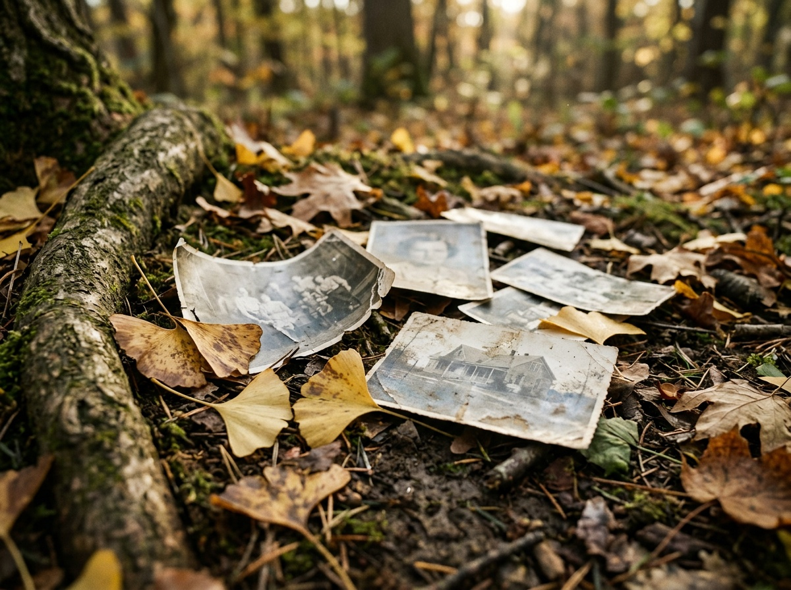
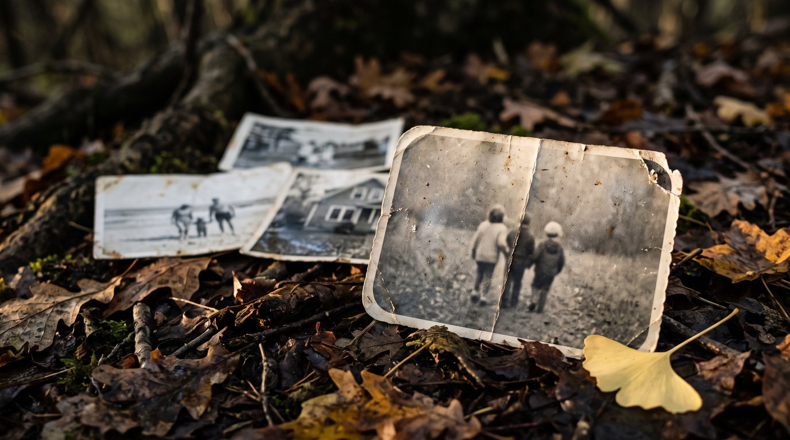
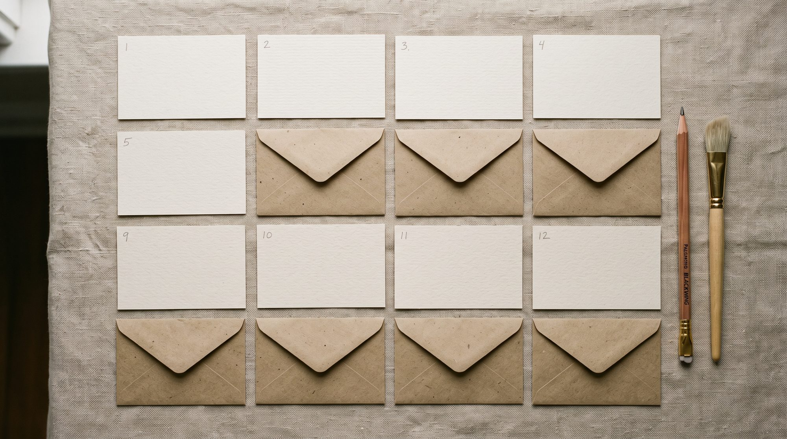
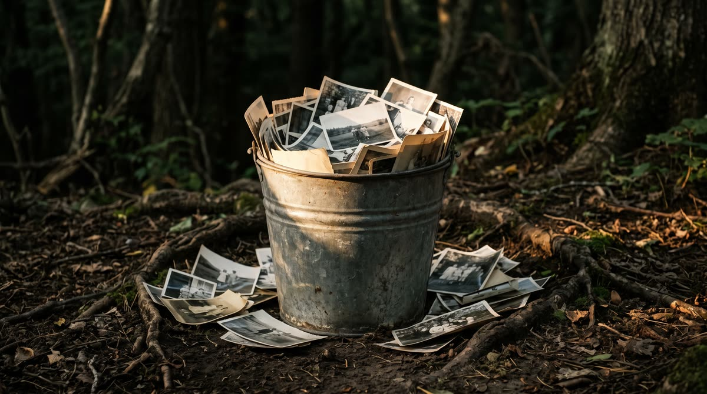
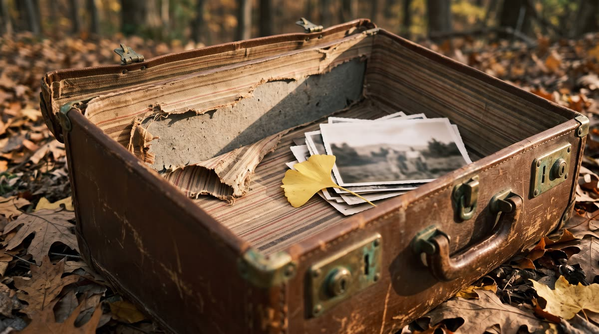
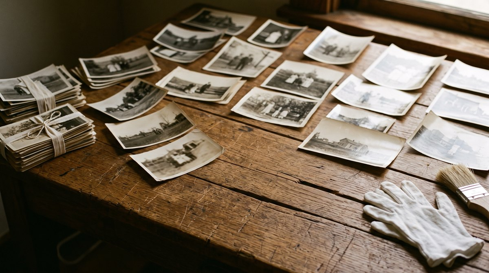
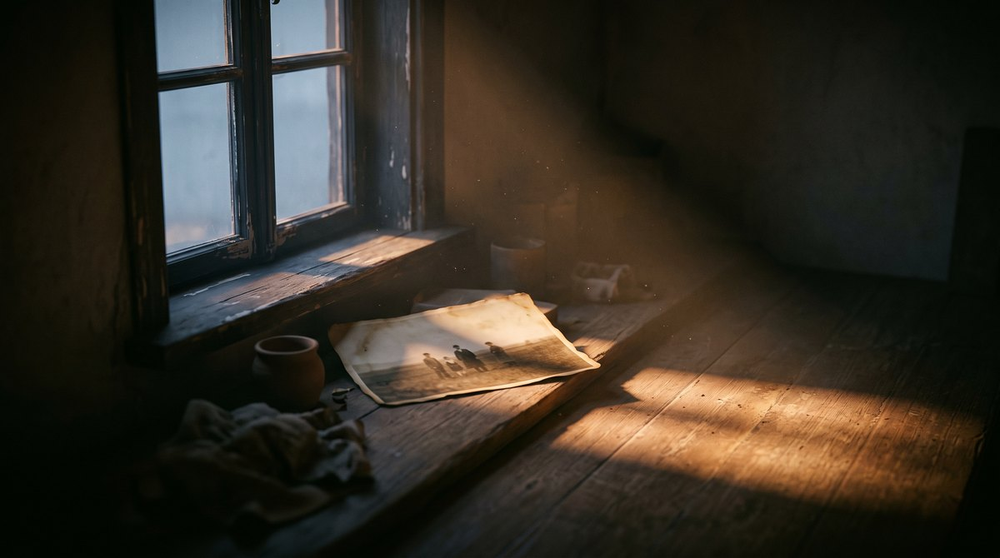

Архив семьи почти всегда живёт в одной коробке
Чемодан на антресолях, жестяная банка, конверт из-под открыток. Внутри - свадьба, которую больше некому пересказать, двор, которого нет, и лица, которые вы узнаёте по одному повороту головы.
Мы работаем именно с таким архивом: домашним, разрозненным, без описи. Не нужно ничего сортировать заранее - достаточно снять снимок на телефон при ровном свете.

Время оставляет след не только на коре
Бумага желтеет, эмульсия трескается, углы истираются от рук, которые эти снимки перебирали. Влага оставляет разводы, скотч - жёлтые полосы, а сгиб посреди лица со временем становится белой линией.
Это не порча. Это возраст. Наша задача - убрать шум времени и оставить человека таким, каким он был: та же форма скул, тот же прищур, та же улыбка. Мы не переписываем черты и не сочиняем то, чего на снимке не было.

Три шага - и снимок в работе
Приём заявок открыт прямо сейчас. Дальше всё происходит на нашей стороне, вам не нужно ничего настраивать.
Снимок
Сфотографируйте оригинал целиком при дневном свете, без вспышки и бликов. Скан подойдёт тоже.
Разбор
Смотрим, что с бумагой: сгибы, потери, царапины, выцветание. Говорим честно, что получится, а что уже утрачено.
Бережная работа
Восстанавливаем аккуратно, шаг за шагом, сверяясь с лицом на оригинале. Спорные места оставляем как есть, а не додумываем.

Мы не обещаем мгновенного чуда
Хорошая работа с семейным снимком - это часы внимания, а не пара минут. Поэтому мы говорим о сроках прямо и не прячем текущее состояние сервиса.
Заявки принимаем сегодня. Место в очереди закрепляется за вами в порядке записи.
Сейчас мы держим паузу на выдаче, чтобы не отдавать работу второпях. Как только она снимется, вы узнаете первыми.
В штатном режиме готовый снимок возвращается к утру следующего дня, в сложных случаях - около двух суток.
Мы работаем только с копией. Бумажный снимок никуда не уезжает и остаётся дома, в вашем чемодане.
Иногда архив стоит в ведре у стены
Не у всех есть альбом. У кого-то снимки живут в цинковом ведре, в пакете из-под сахара, в коробке из-под обуви под кроватью. Порядок там когда-то был, но его давно никто не поддерживал.
Нам это подходит. Не нужно раскладывать по годам перед тем, как написать: разбор - это наша часть работы, а не ваша.

Чемодан хранит не только снимки
Полосатая подкладка, порванная в углу, запах старой кожи, застёжка, которая открывается с усилием. Вещь, в которой лежит архив, сама по себе часть истории семьи.
Поэтому мы не просим присылать оригиналы. Достаточно снимка на телефон при ровном свете: чемодан и всё, что в нём, остаются дома.

Сначала всё просто раскладывают на стол
Чемодан открывают, и снимки ложатся на стол в один слой: пачки, перевязанные бечёвкой, отдельные карточки, что-то без дат и без имён. Только так видно, что вообще есть в архиве.
Перчатки и мягкая кисть - не реквизит, а привычка: бумагу берут за края и сметают пыль, а не протирают её тряпкой.

Самое честное в этой работе - терпение
Снимок может пролежать на подоконнике до утра, пока мы решаем, что с заломом делать. Иногда правильный ответ приходит только при другом свете.
Поэтому мы не называем срок в часах. Лучше подождать одну ночь, чем вернуть карточку, в которой что-то чужое.

Оставьте снимку место в очереди
Запись ни к чему не обязывает. Мы напишем, когда подойдёт ваша очередь и выдача снова откроется - и начнём спокойно, с одного кадра.
Занять место в листе ожидания